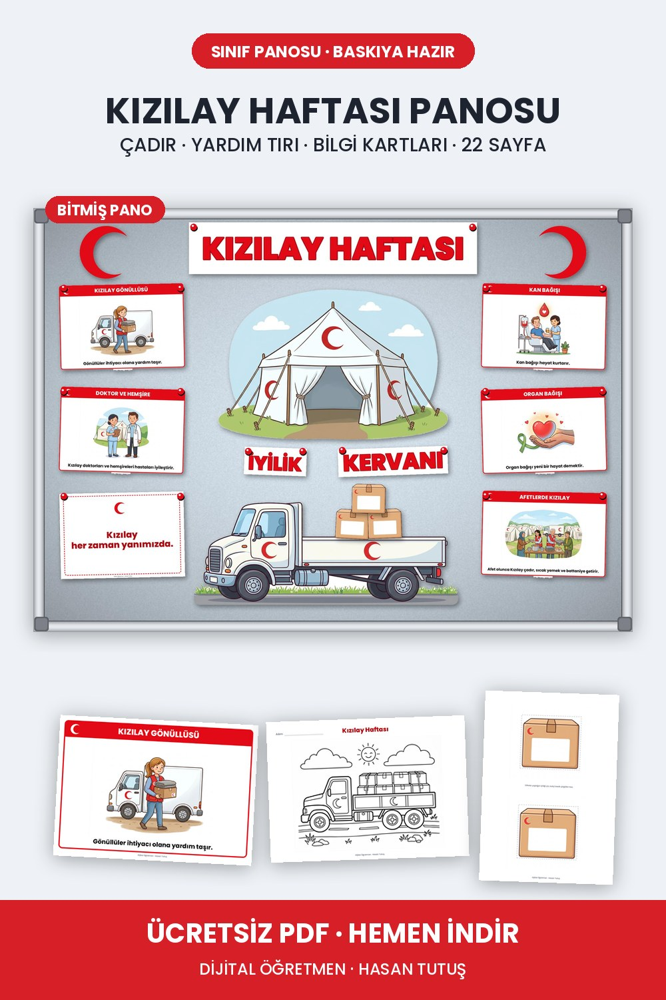

Pin 6
Başlık
Kızılay Haftası Panosu | Çadır, Yardım Tırı, Bilgi Kartları (Ücretsiz PDF)
Açıklama
Kızılay Haftası için 22 sayfalık sınıf panosu seti. Ortada büyük Kızılay çadırı, altında yardım tırı ve iyilik kolileri, iki yanda kan bağışından afet yardımına bilgi kartları var. Boyama sayfası ve söz kartları da sette. A4'e basılır, kesilip panoya asılır. İlkokul öğretmenleri için ücretsiz, bağlantıdan indirebilirsiniz.
Bağlantı
https://oogretmen1-tech.github.io/kizilay-haftasi-etkinlikleri.html
Pano
Belirli Gün ve Haftalar Panoları